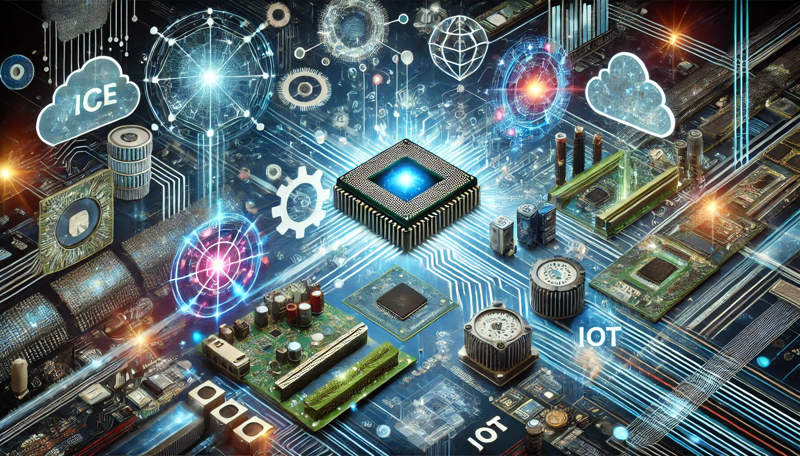

Content
The "Fundamentals of Computer Engineering" subjectis structured into two main parts: the theoretical and the practical. The theoretical part begins with an exploration of the historical background of Computer Engineering, providing an understanding of its evolution from past to present and projecting its future. It covers key terminologies and concepts, the evolution of Information and Communication Technology (ICT), and the role of Computer Engineering as both an academic discipline and a professional field. This section also emphasizes the anthropological and ethical foundations of the field.
Moving on to information and data, the subject delves into how information is represented and organized within computer systems. It introduces fundamental concepts such as number systems, data coding, and models, alongside contemporary topics like Big Data, data protection, and the legal and ethical challenges surrounding information management.
The subject then addresses the structure and functionality of computer systems, including hardware, software, operating systems, and networks. It explores modern paradigms and technologies such as cloud computing, quantum computing, artificial intelligence, blockchain, robotics, smart cities, and the Internet of Things (IoT), highlighting their interconnected roles in modern computing landscapes.
In the practical part, we are introduced to software development and management, including the use of version control systems like Git and GitHub, and integrated development environments (IDEs). They gain hands-on experience in web development, learning to create HTML5 web pages, manipulate the Document Object Model (DOM), and design and layout web pages using CSS3.
- Understand the ultimate goals and values of Computer Engineering in society while we fulfill our future role as engineers.
- Aquire knowledge of the principales in which technology is based, with an historical perpective on the development of technology.
- Acknowledge the importance of the individuals in this industry and commit ourselves to the common good.
- Gain a global view of the field while understanding its different areas of knowledge and career paths.
- Gain insights into current paradigms, trends in computing, data management, and an overview of web development.
Objectives
- Recognize and Use Key Terminology: Understand and explain terminology related to hardware and software involved in computer system creation and management in a correct manner.
- Relate Historical Events: Identify and explain key historical facts in the development of computers and computer science, as well as analyze future trends.
- Explain Information Representation: Describe and apply mechanisms for representing and organizing numerical and non-numerical information within a computer system.
- Understand Core Areas of Computer Engineering: Explain fundamental aspects of hardware, software, and networks.
- Develop a Web System Create a webpage using HTML, CSS and github repositories.
- Present Computer Projects: Research, prepare, and present computer projects effectively, both in writing and orally.
Learning Outcomes

Social Media

Contact